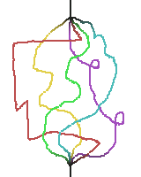

Deep Wave Bend
A Neural Network Guitar Pedal

Neural
Network
üëâ
This neural network is trained to turn a guitar into a piano in real time. Click here to see it in action! The version of the pedal above is an experimental "lite" version that downloads the network and then runs locally in your browser!
If you want to run the full version I use and you're familiar with running python, you can find the instructions for running it in the repo here.
If you want to train, customize, or improve, this network, the google colab I use to train the network is here!